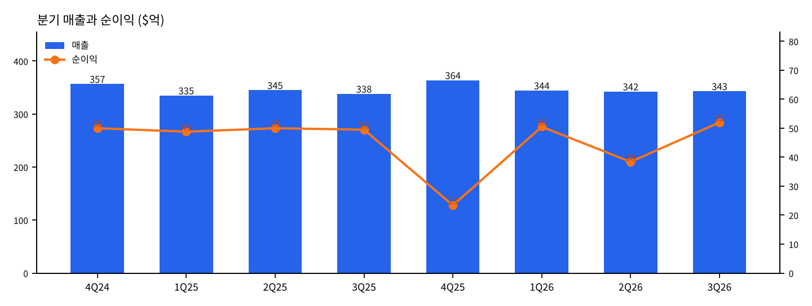
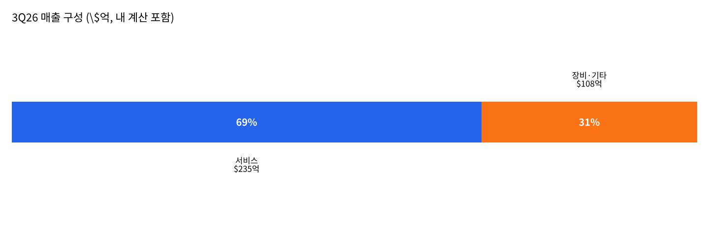
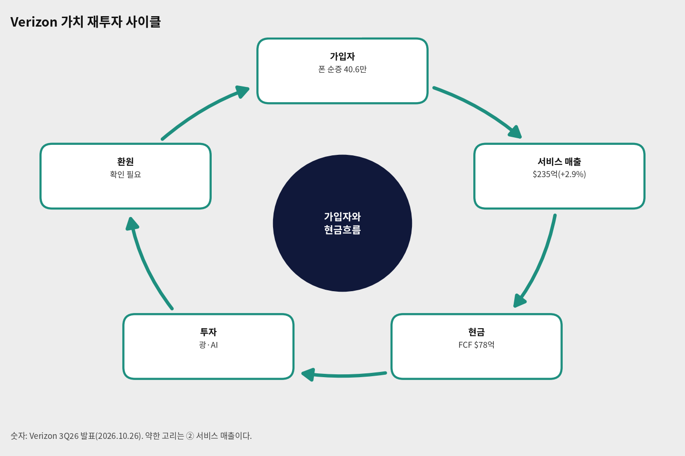

Verizon은 무선통신 최대 사업자 중 하나로 광(파이오스)과 고정무선 광대역으로 확장 중이다. 이번 분기 프로모션을 절제하면서 가입자 순증을 늘렸다.
| 항목 | 내용 |
|---|---|
| 종목 | Verizon Communications (VZ) · NYSE · 커뮤니케이션(통신) · 뉴욕 |
| 멀티플 | PER·PEG는 조정 EPS 기준(08 항목 표) |
| 최근 분기(3Q26) | 매출 $343억, 조정 EPS $1.31, 조정 EBITDA $138억 |
| 가이던스(FY26) | 조정 EPS $5.04~5.06, 폰 순증 110~120만 |
| 직원 수 | 약 89,900명(트레이딩뷰) |
| 직책 | 인물 | 역할·특징 |
|---|---|---|
| CEO | 댄 슐먼(Dan Schulman) | '또 한 번의 기록적인 분기'라며 다년 변혁 전략의 모멘텀을 강조 |
| CFO | (확인 필요) | (이번 조사에서 확인하지 못함) |
경영 스타일: '변혁 + 비용 절감 + 절제된 프로모션'. 이탈률을 낮추고 현금흐름을 늘리는 데 초점을 둔다.
광(파이오스)과 고정무선 광대역으로 가정용 인터넷을 늘린다(광 가입자 +44%).
AWS와 약 $20억 AI 인프라 협력을 발표했다.
다음 실적발표는 세 가지 질문에 답하는 자리다.
1. 폰 순증이 가이던스(110~120만)에 닿나?
2. ARPA 하락(-1.9%)이 멈추나?
3. 비용 절감이 이익 증가로 이어지나?
한 줄 판정 규칙: 첫 질문(폰 순증)과 둘째 질문(ARPA)이 개선되면 약한 고리(단가 하락)가 풀린다.
일정: 4Q26 실적 발표는 트레이딩뷰 기준 2027.01.26(확인 필요).
| 분기 | 매출 | 순이익 | EPS | 조정 EPS | 특이 사항 |
|---|---|---|---|---|---|
| 4Q24 | $356.8억 | $50.0억 | 1.18 | 1.10 | |
| 1Q25 | $334.9억 | $48.8억 | 1.15 | 1.19 | |
| 2Q25 | $345.0억 | $50.0억 | 1.18 | 1.22 | |
| 3Q25 | $338.2억 | $49.5억 | 1.17 | 1.21 | |
| 4Q25 | $363.8억 | $23.4억 | 0.55 | 1.09 | GAAP 순이익 $23.4억(일회성 비용), 조정 EPS $1.09 |
| 1Q26 | $344.4억 | $50.5억 | 1.20 | 1.28 | |
| 2Q26 | $342.5억 | $38.4억 | 0.92 | 1.30 | |
| 3Q26 | $343.1억 | $52.0억 | 1.25 | 1.31 |
3Q26 매출 $343억(트레이딩뷰), 순이익 $53.2억, EPS $1.25(+6.8%), 조정 EPS $1.31(+8.3%)(회사 발표 2026.10.26). 1Q26 GAAP 순이익은 일회성 비용으로 낮다. 매출·순이익·EPS(GAAP 희석)는 트레이딩뷰 스캐너, 조정 EPS는 트레이딩뷰 실적 페이지의 Reported 값이다. 분기 정렬은 오래된 분기→최신이다.

흐름 요약: 최근 분기 매출은 $343.1억로 전년 동기 $338.2억 대비 +1.4%, 순이익은 $52.0억(전년 $49.5억)다. 최근 4분기 GAAP EPS는 $3.92, 조정 EPS는 $4.98다.
| 항목 | 내용 | 3Q26 금액 | 비고 |
|---|---|---|---|
| 모빌리티·광대역 서비스 | 무선·광·고정무선 서비스 | $235억 | +2.9% |
| 장비·기타(내 계산) | 총매출 − 서비스 | $108억 | 총 $343억 |

서비스 매출이 총매출의 약 69%(내 계산)다. 부문별 매출은 확인하지 못해 항목 수준으로 대신했다.
Verizon은 '고객에게 최고의 네트워크 경험을 제공하고 변혁으로 성장하는 것'을 목표로 한다.
| 축 | 내용 |
|---|---|
| 가입자 | 폰 순증 110~120만(FY26) |
| 현금 | FCF 약 12% 성장 |
| 투자 | 광·AI 인프라 |

| 이동평균 | 값 | 종가 대비 | 위치 |
|---|---|---|---|
| 5일선 | $46.26 | -0.3% | 종가 아래 |
| 20일선 | $45.35 | +1.7% | 종가 위 |
| 50일선 | $46.00 | +0.3% | 종가 위 |
| 100일선 | $46.30 | -0.4% | 종가 아래 |
| 200일선 | $47.17 | -2.2% | 종가 아래 |
52주 고가 $51.68(2026-03-24)·저가 $38.68(2026-01-20) 범위에서 종가 $46.13는 20일선, 50일선을 웃돌고 5일선, 100일선, 200일선은 밑돈다.
| 규칙 | 기준 | 현재 값 | 신호 |
|---|---|---|---|
| 장기 추세 필터 | 종가 vs 200일선 | $46.13 < $47.17 | 매도 |
| 중장기 교차 | 50일선 vs 200일선 | $46.00 < $47.17 | 매도 |
| 단기 교차 | 20일선 vs 50일선 | $45.35 < $46.00 | 매도 |
| 돈키언 채널 | 55일 고가 $51.67 / 저가 $40.81 | 중간값 $46.24 아래 | 매도 |
| 1개월 모멘텀 | 21거래일 수익률 | +3.6% (기준 $44.54) | 매수 |
| 3개월 모멘텀 | 63거래일 수익률 | -6.2% (기준 $49.19) | 매도 |
| 6개월 모멘텀 | 126거래일 수익률 | -3.5% (기준 $47.82) | 매도 |
| 12개월 모멘텀 | 252거래일 수익률 | +12.5% (기준 $41.01) | 매수 |
| 종합 (8개 평균) | -0.50 | 매도 |
해석: 매수 신호 2개(1개월 모멘텀, 12개월 모멘텀), 매도 신호 6개(장기 추세 필터, 중장기 교차, 단기 교차, 돈키언 채널, 3개월 모멘텀, 6개월 모멘텀). CTA 점수 -0.50(매도). 14일 ATR $1.00 (2.2%), 52주 고가 $51.68 · 저가 $38.68.
| 가격 | 기준 | 무엇이 바뀌나 |
|---|---|---|
| $51.67 | 55일 고가 | 돌파 시 채널 상단 갱신 |
| $49.19 | 3개월 모멘텀 기준가 | 종가가 이 가격 위면 3개월 신호 매수 |
| $47.82 | 6개월 모멘텀 기준가 | 종가가 이 가격 위면 6개월 신호 매수 |
| $47.17 | 200일선 | 종가가 이 선 위/아래인지로 장기 추세 신호가 바뀜 |
| $46.24 | 돈키언 중간값 | 55일 채널 중간값 위/아래로 신호가 바뀜 |
| $44.54 | 1개월 모멘텀 기준가 | 종가가 이 가격 위면 1개월 신호 매수 |
| $41.01 | 12개월 모멘텀 기준가 | 종가가 이 가격 위면 12개월 신호 매수 |
| $40.81 | 55일 저가 | 이탈 시 채널 하단 갱신 |
가격 수준은 신호가 바뀌는 기준선일 뿐 진입·청산 가격 제안이 아니다. 20일/50일 교차는 이동평균 자체가 움직여 단일 가격으로 표시하지 않았다. 일봉·주봉은 종가 기준 직접 계산(고저 데이터 미사용)이다.
| 악재 요인 | 내용 | 강도 |
|---|---|---|
| ARPA 하락 | $168.08(-1.9%) | 중간 |
| 장비 매출 감소 | 업그레이드 주기 길어짐 | 중간 |
| 부채 | 부채 $1,890억 | 높음 |
| 고정무선 순증 감소 | FWA 순증 15.9만(전년 대비 -39%) | 중간 |
| 티커 | 회사 | PER(TTM) | PEG | P/S | EPS 성장(YoY) |
|---|---|---|---|---|---|
| VZ | Verizon | 9.3배 | 1.68 | 1.37배 | +6% |
| T | AT&T | 11.8배 | – | 1.18배 | -40% |
| TMUS | T-Mobile | 15.8배 | – | 1.92배 | +0% |
| CMCSA | Comcast | 8.0배 | – | 0.73배 | -48% |
비교 결론: Verizon PER은 AT&T와 비슷하고 Comcast보다 높다.
Verizon은 FCF 약 $224억(TTM)으로 부채 $1,890억을 감당한다.
| 지표 | 값 | 출처 | 해석 |
|---|---|---|---|
| 현금·단기투자 | $47억 | 트레이딩뷰 스캐너(최근 분기) | |
| 총부채 | $1,890억 | 트레이딩뷰 스캐너(최근 분기) | |
| 순부채(부채−현금) | $1,843억 | 내 계산 | 현금 대비 부채 부담 |
| 잉여현금흐름(TTM) | $224억 | 트레이딩뷰 스캐너 | |
| TTM 매출 | $1,394억 | 트레이딩뷰 스캐너 |
| 기준 | 매출 | P/S | 비고 |
|---|---|---|---|
| 내 계산(종가 ÷ 최근 4분기 매출 합계) | $1,393.8억 | 1.37배 | 시총은 정렬용 데이터에서만 사용 |
| 동종(트레이딩뷰) | – | T 1.18배 · TMUS 1.92배 · CMCSA 0.73배 | 11.19 |
해석: P/S 1.37배는 AT&T(1.18배)보다 높다.
EBITDA는 영업활동의 현금 창출력을 보는 지표이고, PEG는 PER을 EPS 성장률로 나눈 값이다. EBITDA·FCF는 트레이딩뷰 TTM 값이다.
| 지표 | 값 | 산출 |
|---|---|---|
| EBITDA(TTM) | $528억 | 트레이딩뷰 스캐너 |
| EBITDA 마진 | 37.9% | EBITDA ÷ TTM 매출(내 계산) |
| FCF 마진 | 16.1% | FCF ÷ TTM 매출(내 계산) |
| PER(GAAP TTM) | 11.8배 | $46.13 ÷ $3.92 |
| PER(조정 TTM) | 9.3배 | $46.13 ÷ $4.98 |
| 방식 | PER | EPS 성장률 | PEG | 판정 |
|---|---|---|---|---|
| 조정 EPS (TTM $4.98) | 9.3배 | +6% ($4.72 → $4.98) | 1.68 | 기준 초과 |
| GAAP EPS (TTM $3.92) | 11.8배 | -16% ($4.68 → $3.92) | 산출 불가 | 참고 |
판정: 조정 EPS 기준 PEG 1.68 → 1.0 초과 PEG 기준은 1.0 이하 투자 적격, 0.5 이하 적극 매수다. EPS 성장률은 최근 4분기 EPS 합계를 직전 4분기 합계와 비교한 값(내 계산)이고, 일회성 항목이 있으면 조정 EPS 행을 함께 본다.

Verizon의 사이클은 가입자 → 서비스 매출 → 현금 → 광·네트워크 투자 → 환원이다.
| 고리 | 현재 숫자 | 고리 강도 | 약해지는 신호 |
|---|---|---|---|
| ① 가입자 | 폰 순증 40.6만 | 강함 | 프로모션 |
| ② 서비스 매출 | $235억(+2.9%) | 보통 | ARPA |
| ③ 현금 | FCF $78억(+12%) | 강함 | 부채 |
| ④ 투자 | 광·AI 인프라 | 진행 중 | 자본 지출 |
| ⑤ 환원 | 배당(확인 필요) | 확인 필요 | 부채 |
사이클의 특징: 가장 약한 곳은 ② 서비스 매출이다. 증가율이 +2.9%에 그치고 ARPA가 줄었다.